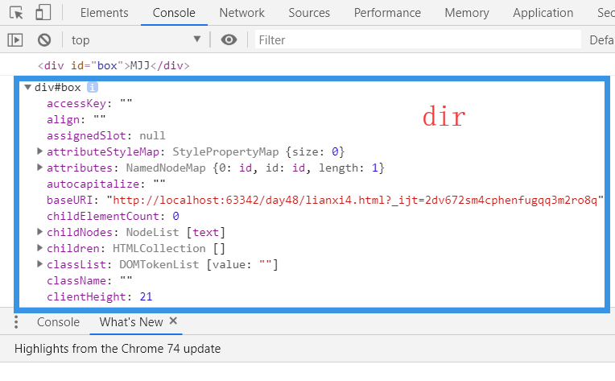

原文出处:本文由博客园博主是阿凯啊提供。
原文连接:https://www.cnblogs.com/xujunkai/p/11028267.html
原文连接:https://www.cnblogs.com/xujunkai/p/11028267.html
目录
一.内容回顾：
ECMAScript基础语法
1.基本数据类型和引用数据类型
基本数据类型number,string,boolean,undefined,null
引用数据类型：Array,Object,Function2.条件判断和循环
switch(name){
case 'xxx';
break;
case 'xxx';
break;
default:
break;
}
for (var i=0;i<10;i++){
run to code
}
三元运算：
1>3? '真的':'假的';3.赋值运算符，逻辑运算符
&& || !
i ++
==比较值 ===比较值和数据类型4.字符串的常用方法
slice() 切片 一个参数从当前位置切到最后，两个参数顾头不顾尾
substring()
substr() 如果有两个参数，第二个参数表示切字符串的个数
join()
字符串拼接
concat()
+
es6的模版字符串
··插入变量用${变量名}
//获取索引
indexOf()
lastIndexOf()
//获取字符
charAt()
//获取字符ascii码
charCodeAt()
//转大写
toUppercase()
//转小写
tolowercase()
typeOf 校验当前变量的数据类型
trim 清除左右的空格5.数组的常用方法
toString()
join('#')
concat()
//栈
push()
pop()
//堆
unshift()
shift()
splice(起始位置，删除的个数，添加的元素);
//增加，删除，替换
reverse()
sort()
slice()
length
//迭代方法
forEach() //仅能在数组对象中使用。
for
在函数中arguments 这个对象是伪数组6.对象
function fn(name){
var obj = {};
obj[name]='mjj';
return obj;
}
fn('age')
//遍历对象
for (var key in obj) {
obj[key]
}7.函数
1.创建方法
//普通函数
function fn(){
}
fn();
//函数表达式
var fn = function(){
run to code
}
//匿名函数
(function(){})()//this指向一定指向window
全局作用域，函数作用域，函数作用域中this指向可以发生改变，可以使用call() 或者apply()
e.g.:
var obj = {name:'mjj'};
function fn(){
console.log(this.name);
}
fn();//是空制，因为函数内容this指向window
fn.call(obj);//此时函数内部的this指向obj
构造函数
new object();
new Array();
new String();
父级定义一个属性必须使用prototype8.日期对象
var data = new Data();
date.toLocaleString() //2018/08/21 21:33:239.Math数学对象
Math.ceil(); 向上取整,天花板函数
Math.floor(); 向下取整，地板函数
Math.round(); 标准的四舍五入
随机数
Math.random();获取到0-1之间的数
function random(min,max){
Math.floor(Math.random()*(max-min))+min;
}10.数值和字符串转换
1.数值转字符串
toString()
数字+空字符串
2.字符串转数值
parseInt() 转整数
parseFloat() 转浮点型
Number()
NAN
isNaN()
Infinity 无限大11.let var 区别
1.ES6可以用let定义块级作用域变量
2.let 配合for循环的独特应用
3.let没有变量提升与暂时性死区
4.let变量不能重复声明12.看代码写结果
var a = 99; // 全局变量a
f(); // f是函数，虽然定义在调用的后面，但是函数声明会提升到作用域的顶部。
console.log(a); // a=>99, 此时是全局变量的a
function f() {
console.log(a); // 当前的a变量是下面变量a声明提升后，默认值undefined
var a = 10;
console.log(a); // a => 10
}
//undefined
//10
//99二.详细内容：
1.BOM(浏览器对象模型)
BOM的核心对象是Window,它表示浏览器的一个实例，在浏览器中，window对象有双重角色，即是JavaScript访问浏览器窗口的一个接口。
又是ECMAScript规定Global对象。
1.系统对话框方法
1.alert() 警告框
<body>
<script type="text/javascript">
window.alert('mjj');
</script>
</body>- 效果显示：
例题
//例题： <script> console.log(window.location); var i=1; function f(){ i++; console.log("打印 : "+i); return k; function k() { return "I love you!" } } f(); console.log("111111111111"); f()(); alert(f()()); </script> //打印2 //11111111111 //打印3 //打印4 //警告框出现"I love you!"
2.confirm()确认框
- 如果点击确定,返回
true,点击取消,返回false。
<body>
<script type="text/javascript">
var src = window.prompt("今天天气如何");
switch (src) {
case '晴天':
console.log('出去打球');
break;
case '阴天':
console.log('在家睡觉');
break;
default:
console.log("什么都不做");
break
}
</script>
</body>- 效果显示：
3.prompt()弹出框
- prompt默认接收两个参数，第一个参数显示文本，第二个参数默认的文本。
<body>
<script type="text/javascript">
var src = window.prompt("今天天气如何",'晴天');
switch (src) {
case '晴天':
console.log('出去打球');
break;
case '阴天':
console.log('在家睡觉');
break;
default:
console.log("什么都不做");
break
}
</script>
</body>- 效果显示
2.定时方法**********
1.一次性任务setTimeout()
- setTimeout()方法表示一次性定时任务做某件事情,它接收两个参数,第一个参数为执行的函数,第二个参数为时间(毫秒计时:1000毫秒==1秒)
<script type="text/javascript">
window.setTimeout(function(){
console.log('2秒后我将打印');
},2000);
console.log('立刻打印');
</script>
//setTimeout(参数1，参数2);参数1为一个函数，参数2为时间以毫秒为单位。此处要知道setTimeout是异步。一次性任务的清除
var timer = setTimeout(callback,1000); clearTimeout(timer); //清除定时器。href属性
//2秒后跳转 百度网页 setTimeout(function () { location.href = 'https://www.baidu.com'; },2000);replace
//2秒后跳转 百度网页,在当前页面跳转 setTimeout(function(){ location.replace('https://www.baidu.com'); },2000)
2.周期性循环setInterval
setInterval()方法表示周期性循环的定时任务.它接收的参数跟setTimeout()方法一样.
<script>
var num = 0;
var timer = null;
//开启定时器
timer = window.setInterval(function(){
num++;
if (num===10){
//当num===10 清除定时器
clearInterval(timer);
}
console.log(num);//console打印出数字
},1000);//1000ms=1s
</script>
//每2秒刷新。
setInterval(function(){
//做测试
location.reload();
},2000);
//局部刷新 ajax技术，在不重载页面上，对网页进行操作3.locaion对象属性
- location是最有用的BOM对象之一,它提供了与当前窗口中加载的文档有关的信息，还提供了一 些导航功能。事实上，location 对象是很特别的一个对象，因为它既是 window 对象的属性，也是document 对象的属性;
<script>
console.log(window.location);//获取属性
setInterval(function(){
location.reload();//刷新页面
},2000);
</script>
//局限较大，通常都是局部刷新，通过AJAX技术，在不重载页面的情况，对网页进行操作reload()方法
location.reload();//重新加载（有可能从缓存中加载） location.reload(true;)//重新加载（强制从服务器加载）history
history.go(-1);//后退一页 history.go(1);//前进一页 history.go(2);//前进两页
console.log(window.location);
//获取属性- 显示效果
2.DOM（文档对象模型）
- 顶层对象BOM---->文档------>文档内容
2.1节点
元素节点
- 像
<body>、<p>、<ul>之类的元素这些我们都称为叫元素节点（element node）。
- 像
文本节点
元素只是不同节点类型中的一种。如果一份文档完全由一些空白元素构成，它将有一个结构，但这份文档本身将不会包含什么内容。在网上，内容决定着一切，没有内容的文档是没有任何价值的，而绝大数内容都是有文本提供。
//示例： <p>这是一个文本</p> //‘这是一个文本’ 是一个文本节点
属性节点
还存在着其他的一些节点类型。例如，注释就是另外一种节点类型。但这里我们介绍的是属性节点。
//示例 <p title='book'>这是一本书！</p> //title='book'是一个属性节点
2.3获取节点对象的三种方式
2.3.1 document.getElementById 方法
- getElementById 的方法只有一个参数，用于获得元素的id属性值，这个id值必须为字符串类型。
<body>
<div id="box">MJJ</div>
<ul id="box2">
<li class="active"></li>
<li></li>
<li></li>
</ul>
<script>
var box = document.getElementById('box');
console.log(box);
console.dir(box);
</script>
<body>
//
2.3.2document.getElementsByTagName()方法
- 通过标签名字获取节点对象（获取是伪数组），这个方法将返回一个元素对象集合。
//示例1：
<body>
<div id="box">MJJ</div>
<ul id="box2">
<li class="active"></li>
<li></li>
<li></li>
</ul>
<script>
var box = document.getElementsByTagName('div');
console.log(box);//HTMLCollection [div#box, box: div#box]
</script>
</body>//示例2
<!DOCTYPE html>
<html lang="en">
<head>
<meta charset="UTF-8">
<title>Title</title>
//css
<style>
ul li.active{
color:red;
}
</style>
</head>
<body>
//html
<div id="box">MJJ</div>
<ul id="box2">
<li>1</li>
<li>2</li>
<li>3</li>
</ul>
//JS:
<script>
var lis = document.getElementsByTagName('li');
//三个li签
console.log(lis);//HTMLCollection(3) [li, li, li]
for (var i=0;i<lis.length;i++){//循环将li标签添加class 属性，让CSS渲染
lis[i].className = 'active';
}
</script>
</body>
</html>
//示例3：
<!DOCTYPE html>
<html lang="en">
<head>
<meta charset="UTF-8">
<title>Title</title>
//css
<style>
ul li.active{
color:red;
}
</style>
</head>
<body>
//html
<div id="box">MJJ</div>
<ul id="box2">
<li>1</li>
<li>2</li>
<li>3</li>
</ul>
//JS:
<script>
var lis = document.getElementsByTagName('li');
//三个li签
console.log(lis);//HTMLCollection(3) [li, li, li]
for (var i=0;i<lis.length;i++){//循环
lis[i].onclick = function(){
this.className = 'active';//鼠标点击获取事件，并将li标签添加class 属性，让CSS渲染
};
}
</script>
</body>
</html>
//示例4：
<!DOCTYPE html>
<html lang="en">
<head>
<meta charset="UTF-8">
<title>Title</title>
//css
<style>
ul li.active{
color:red;
}
</style>
</head>
<body>
//html
<div id="box">MJJ</div>
<ul id="box2">
<li>1</li>
<li>2</li>
<li>3</li>
</ul>
//JS:
<script>
var lis = document.getElementsByTagName('li');
//三个li签
console.log(lis);//HTMLCollection(3) [li, li, li]
for (var i=0;i<lis.length;i++){//循环
lis[i].onclick = function(){
for (var k=0;k<lis.length;k++){
lis[k].className = '';//排他思想，让其他li默认class=''
}
this.className= 'active';//鼠标点击获取事件，并将li标签添加class 属性，让CSS渲染
};
}
</script>
</body>
</html>2.3.3document.getElementsByClassName()
- DOM中也提供了通过类名来获取某些DOM元素对象的方法.
<!DOCTYPE html>
<html lang="en">
<head>
<meta charset="UTF-8">
<title>Title</title>
<style>
ul li.active{
color:red;
}
</style>
</head>
<body>
<div id="box">MJJ</div>
<ul id="box2">
<li class="active">1</li>
<li>2</li>
<li>3</li>
</ul>
<script>
var lis = document.getElementsByClassName('active');
console.log(lis);//HTMLCollection [li.active]
var box = document.getElementById("box2");
console.log(box.children);//获得box2下所有的子元素 HTMLCollection(3) [li.active, li, li]
</script>
</body>
</html>
<!DOCTYPE html>
<html lang="en">
<head>
<meta charset="UTF-8">
<title>Title</title>
<style>
ul li.active{
color:red;
}
ul li.att{
color:blue;
}
</style>
</head>
<body>
<div id="box">MJJ</div>
<ul id="box2">
<li class="active">1</li>
<li>2</li>
<li>3</li>
</ul>
//红色蓝色来回切换
<script>
var lis = document.getElementsByClassName('active')[0];
var des = true;
lis.onclick = function(){
if (des){
this.className = 'att';des=false;
}else{this.className = 'active';
des = true;
}
};
</script>
</body>
</html>2.4对样式的操作
- box.style.属性(CSS属性带
-，其后面字母大写)
//示例1
<!DOCTYPE html>
<html lang="en">
<head>
<meta charset="UTF-8">
<title>Title</title>
<style>
#box{
width: 200px;
height: 200px;
background-color: red;
}
</style>
</head>
<body>
<div id="box">MJJ</div>
<script type="text/javascript">
// 1.获取事件源对象
var box = document.getElementById('box');
// console.log(box);
//鼠标悬浮，更改样式
//2.绑定事件
box.onmouseover = function () {
box.style.backgroundColor = "green";
box.style.fontSize = '30px';
box.style.width = "200px";
box.style.height = '200px';
};
//鼠标离开更改样式
box.onmouseout = function(){
box.style.backgroundColor = 'red';
box.style.fontSize = '15px';
box.style.width = "400px";
box.style.height = '400px';
};
</script>
</body>
</html>
//示例2：
<!DOCTYPE html>
<html lang="en">
<head>
<meta charset="UTF-8">
<title>Title</title>
<style>
#box{
width: 200px;
height: 200px;
background-color: red;
}
</style>
</head>
<body>
<div id="box">MJJ</div>
<script type="text/javascript">
var box = document.getElementById('box');
des = true;
box.onclick = function(){
if (des){
box.style.backgroundColor = 'blue';
des = false;
}else{
box.style.backgroundColor = 'green';
des = true;
}
}
</script>
</body>
</html>2.5对属性的操作
- getAttribute() 接收一个参数，打算查询的属性名字。
- setAttribute() 语序我们对属性节点的值做修改，传递两个参数，第一个参数为属性名，第二个参数为属性值。
<!DOCTYPE html>
<html lang="en">
<head>
<meta charset="UTF-8">
<title>Title</title>
<style>
.a{
color:red;
font-size:30px;
}
p.active{
color:blue;
}
</style>
</head>
<body>
<p title="my class" id = 's21' class="a">21</p>
<script>
var p1 = document.getElementById('s21');
console.log(p1.getAttribute('title'));//my class
console.log(p1.getAttribute('class'));//a
p1.setAttribute('class','s20'); //更改属性class 值为s20
p1.setAttribute('hello','python');//建立属性hello 值为python
console.log(p1.getAttribute('hello'));//python
console.log(p1.className);//s20
console.log(p1.title);//my class
console.dir(p1);//p#s21.s20 属性
p1.onclick = function(){
this.className = this.className + ' active';//加上' active' CSS可用 p.active
};
</script>
</body>
</html>2.6节点的创建添加删除
2.6.1 createElement()创建节点
此方法可返回一个Element对象。
var newNode = document.createElement(tagName);appendChild添加节点
2.6.2 innerText属性
仅仅对元素获取或者设置文本
newNode.innerText = '你好';
2.6.3 innerHTML属性
既可以设置文本又可以设置标签
newNode.innerHTML = `<a>mjj</a>`
注意：如果想获取节点对象的文本内容，可以直接调用innerText或者innerHTML属性来获取。
<body>
<div id="box">MJJ
<ul id="box2">
<li class="active">1</li>
<li>2</li>
<li>3</li>
</ul>
</div>
<script>
var box = document.getElementById('box');
console.log(box.innerText);
console.log(box.innerHTML);
</script>
</body>
//这是innerText结果
//MJJ
//1
//2
//3
//这是innerHTML结果
//MJJ
// <ul id="box2">
// <li class="active">1</li>
// <li>2</li>
// <li>3</li>
// </ul>2.6.4 appendChild() 插入节点
在指定的节点的最后一个子节点之后添加一个新的子节点。
appendChild(newNode);
2.6.5insertBefore() 插入节点
方法可在已有的子节点前插入一个新的子节点
insertBefore(newNode,node);
2.7 removeChild() 删除节点
removeChild()方法从子节点列表中删除某个节点。如果删除成功，此方法可返回被删除的节点，如失败，则返回NULL。
例题：
<body>
<ul id = 'box'></ul>
<script type = 'text/javascript'>
//通过ID获取单个节点对象
var ul = document.getElementById('box');
var li1 = document.createElement('li');
var li2 = document.createElement('li');
//innerText 只能设置文本格式内容
li2.innerText = '你好';
//innerHTML 可以设置HTML格式，如标签
li1.innerHTML =`<a href='#'>123</a>`;
//给li1子标签(a)添加属性
li1.children[0].style.color = 'blue';
li1.children[0].style.fontSize = '28px';
//给li2标签添加属性（也就是li）color
// console.log(li2);//li
li2.style.color = 'red';
//将创建好的标签加入ul里。
ul.appendChild(li1);
ul.appendChild(li2);
//将li2更改text值，并在li1前面，插入ul标签li2,
li2.innerHTML = '第一个';
ul.insertBefore(li2,li1);
//将li2标签移除
ul.removeChild(li2);
</script>
</body>
2.8 DOM中heigh,clientHeight,offsetHeight属性

直观的理解一波
- clientHeight: 样式的height + 上下padding(内边距区域)
- offsetheight:样式的height+上下padding+上下border-width。
- height :样式高度的height，但在浏览器显示undefined，通过style.height能设置高度，但无法获取。
- 示例：
<!DOCTYPE html>
<html lang="en">
<head>
<meta charset="UTF-8">
<title>Title</title>
<style>
#box{
height: 300px;
padding: 10px;
border: 1px solid red;
background-color: blue;
}
</style>
</head>
<body>
<div id="box"></div>
<script type="text/javascript">
var box = document.getElementById("box");
console.log(box.height);//undefined
console.log(box.offsetHeight);//322
console.log(box.clientHeight);//320
</script>
</body>
</html>3.事件
事件是您在编程时系统内发生的动作或者发生的事情，系统通过它来告诉您在您愿意的情况下您可以以某种方式对它做出回应。例如：如果您在网页上单击一个按钮，您可能想通过显示一个信息框来响应这个动作。
主要事件有：
| 事件 | 说明 |
|---|---|
| onclick | 鼠标单击事件 |
| onmouseover | 鼠标经过事件 |
| onmouseout | 鼠标移开事件 |
| onchange | 文本框内容改变事件 |
| onselect | 文本框内容被选中事件 |
| onfocus | 光标聚焦事件 |
| onblur | 光标失焦事件 |
| onload | 网页加载事件 |
关于事件相关学习参照：https://www.cnblogs.com/majj/p/9102401.html
4.应用
1.遍历数据操作页面
<!DOCTYPE html>
<html lang="en">
<head>
<meta charset="UTF-8">
<title>Title</title>
<style>
li p.name{
color:red;
}
li span.price{
color:blue;
}
</style>
</head>
<body>
<ul id="box"></ul>
<script>
//通过ID获取单个节点对象
var box = document.getElementById('box');
var data = [
{id:1,name:'小米8',subName:'你真好',price:98},
{id:2,name:'小米6',subName:'你真好2',price:948},
{id:3,name:'小米4',subName:'你真好3',price:100},
{id:4,name:'小米2',subName:'你真好4',price:928},
{id:5,name:'小米10',subName:'你真好5',price:918}
];
//遍历data，以便操作数组每个元素
for (var i=0;i<data.length;i++){
//创建标签li 创建节点
var li = document.createElement('li');
//插入数据
li.innerHTML = `<p class="name">${data[i].name}</p>
<p class="subName">${data[i].subName}</p>
<span class="price">${data[i].price}元</span>
`;
//提交数据
box.appendChild(li);
}
</script>
</body>
</html>2.切换图片
<!DOCTYPE html>
<html lang="en">
<head>
<meta charset="UTF-8">
<title>Title</title>
</head>
<body>
<div id = 'box'>
<img src="images/1.jpg" alt="" id = "imgBox">
</div>
<button id="prev">上一张</button>
<button id="next">下一张</button>
<script>
//获取id = 'box'
var imgBox = document.getElementById('imgBox');
//获取id = 'next'
var next = document.getElementById('next');
//获取id = 'prev'
var prev = document.getElementById('prev');
var num = 1;
//事件点击next,此时执行nextImg函数
next.onclick = function () {
nextImg();
};
//nextImg函数增加num值获得下一张图片，最后一张做判断，返回第一张
function nextImg() {
num ++;
if (num===5){
num = 1;
}
imgBox.src = `images/${num}.jpg`;
}
//事件点击prev 此时执行prevImg()函数
prev.onclick = function(){
prevImg();
};
//prevImg函数减少num值获得上一张图片，当num=0返回最后一张图片
function prevImg() {
num --;
if (num===0){
num = 4;
}
imgBox.src = `images/${num}.jpg`;
}
</script>
</body>
</html>